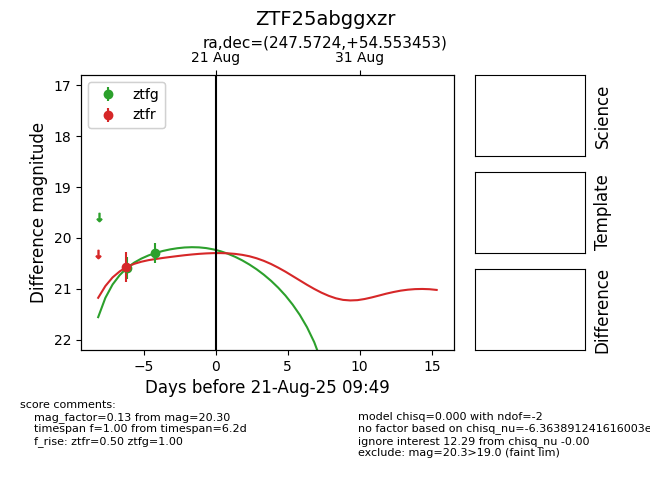

Target ZTF25abggxzr at 2025-08-21 09:49, see:
FINK: fink-portal.org/ZTF25abggxzr
Lasair: lasair-ztf.lsst.ac.uk/objects/ZTF25abggxzr
ALeRCE: alerce.online/object/ZTF25abggxzr
alt names
ZTF25abggxzr (ztf,alerce)
coordinates:
equatorial (ra, dec) = (247.5724,+54.55345)
galactic (l, b) = (83.3341,+42.03869)
photometry
last ztfg=20.30, ztfr=20.58
2 ztfg, 1 ztfr detections
